Corazón que late
10.03.2026 19h
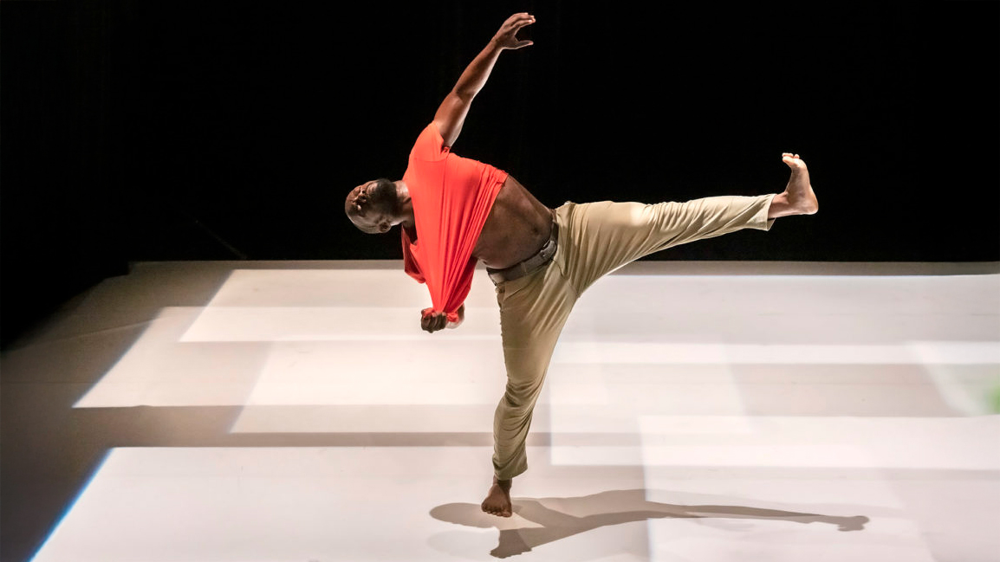
03.03.2026 19h

10.02.2026 19h
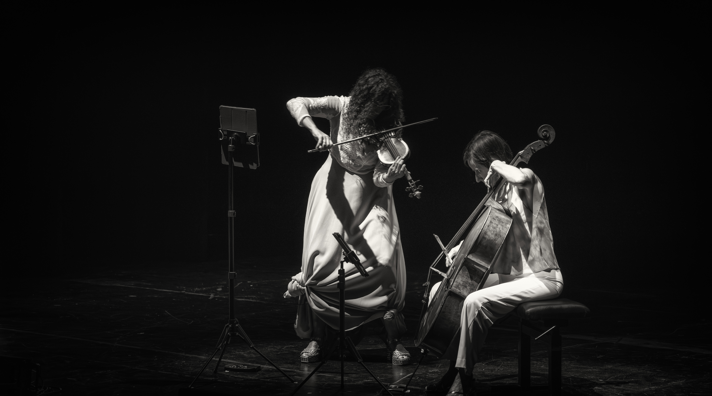
21.04.2026 19h
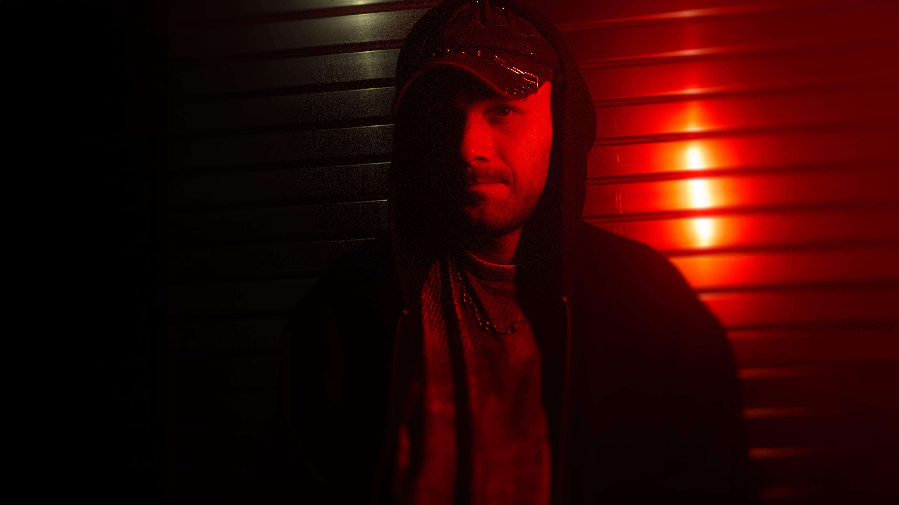
07.04.2026 19h
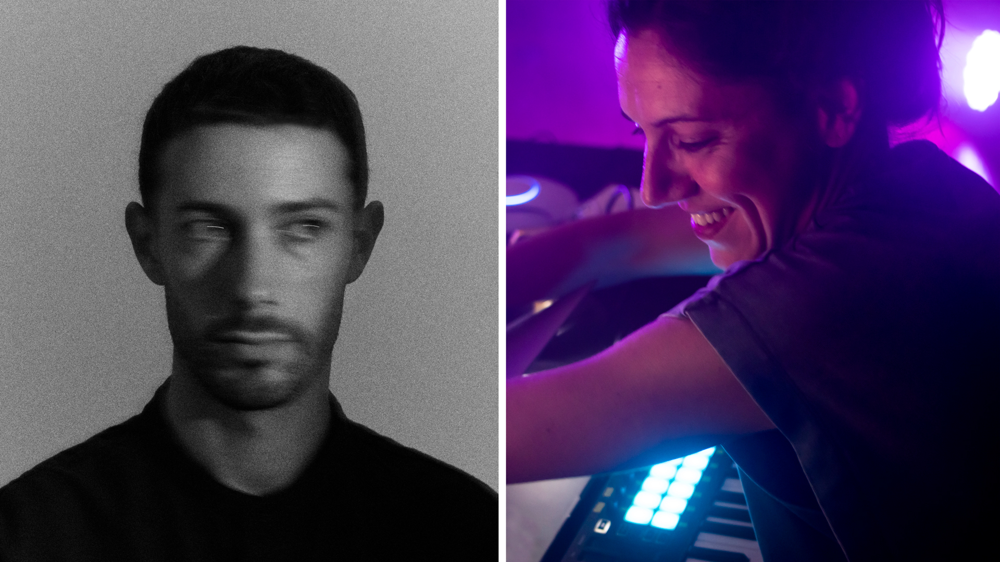
05.05.2026 19h
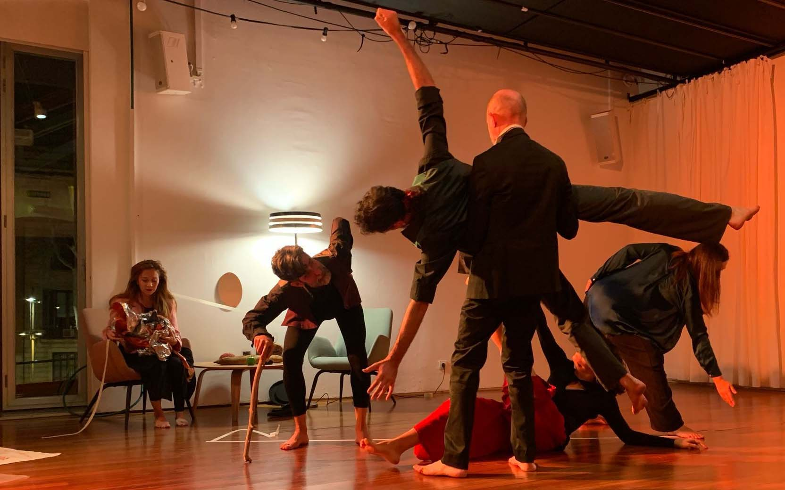
19.05.2026 19h
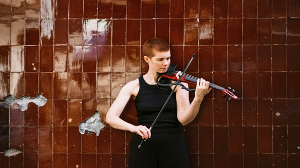
02.06.2026 19h
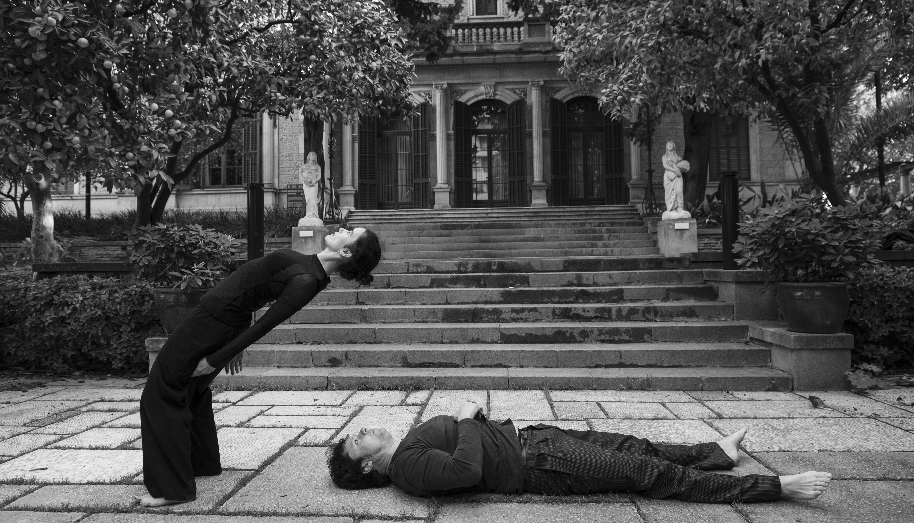
16.06.2026 19h

24.02.2026 19h
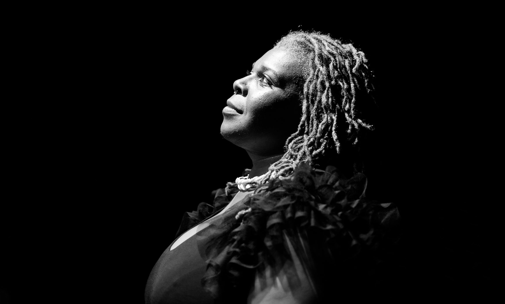
17.02.2026 19h

08.04.2026 19h
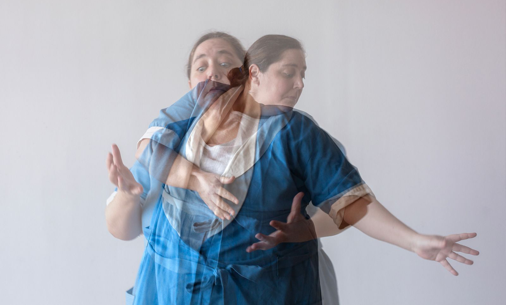
22.04.2026 19h
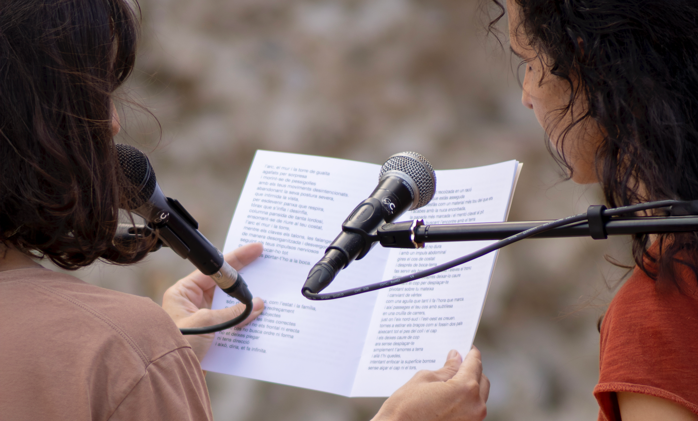
06.05.2026 19h
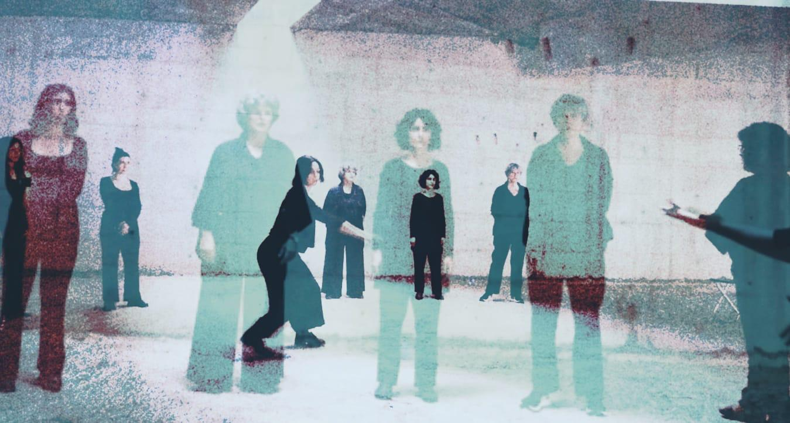
20.05.2026 19h
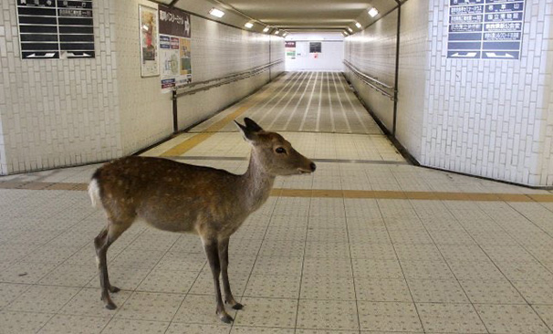
03.06.2026 19h

17.06.2026 19h
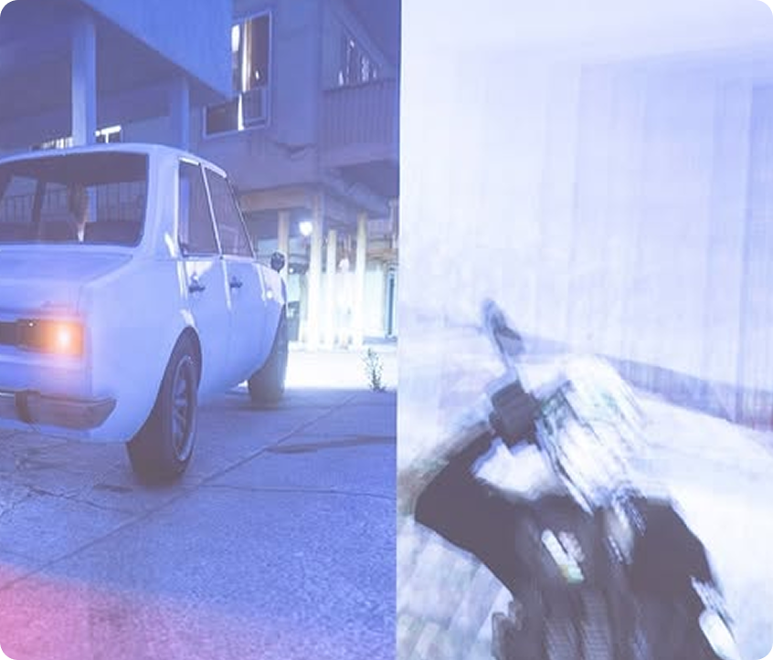
12.11.2025 - 01.02.2026
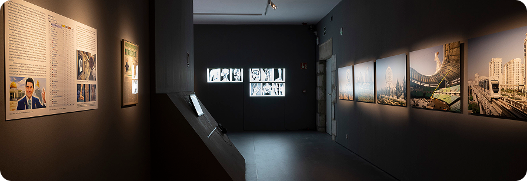
28.04.2025 - 14.09.2025
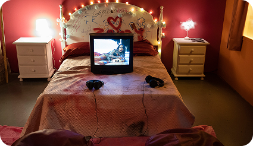
02.10.2024 - 12.01.2025
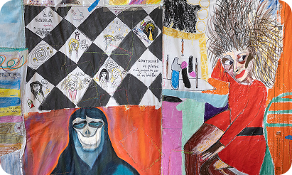
27.06.2024 - 08.09.2024
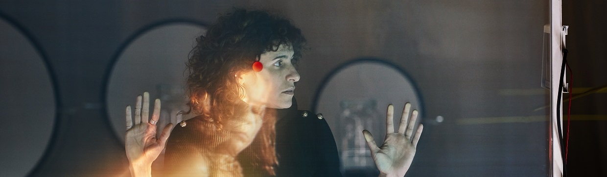
27.06.2024 - 08.09.2024
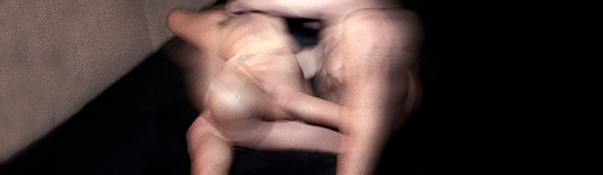
02.10.2024 - 12.01.2025
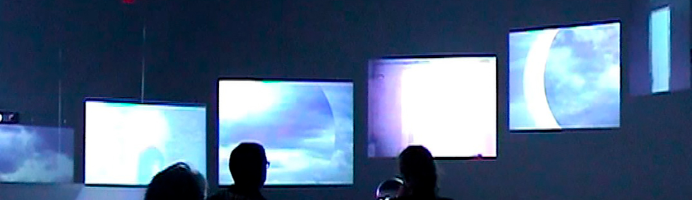
28.04.2025 - 14.09.2025
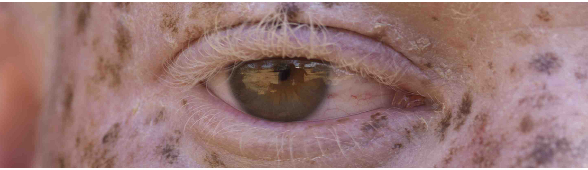
12.11.2025 - 01.02.2026